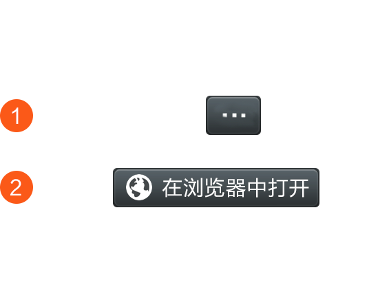

<!DOCTYPE html>
<html>
<head>
    <meta charset="utf-8">
    <meta name="viewport" content="width=device-width,initial-scale=1.0,maximum-scale=1.0,user-scalable=0,viewport-fit=cover">
    <title>请浏览器中打开</title>
</head>
<body style="background-color: rgba(0, 0, 0, 0.5);">
    <div id="tips" style="font-size:25px;text-align: center;line-height: 50px;"></div>
    <script>
    var url = document.location.toString();
    var urlParmStr = url.slice(url.indexOf('=')+1);
    var ua = navigator.userAgent.toLowerCase();
    var isQQ = ua.indexOf('qq') != -1;
    var isWeixin = ua.indexOf('micromessenger') != -1;
    var isAndroid = ua.indexOf('android') != -1;
    var isIos = (ua.indexOf('iphone') != -1) || (ua.indexOf('ipad') != -1);

    var notice_openBrowser = "<h2>请点击右上角，通过浏览器打开本页面。</h2><br />"

    // 判断是不是在微信客户端打开
    if(isWeixin || isQQ) {
    // 判断是在Android的微信客户端还是Ios的微信客户端
    if (isAndroid) {
    document.getElementById("tips").innerHTML=notice_openBrowser;
    }else if (isIos) {
    document.getElementById("tips").innerHTML=notice_openBrowser;
    }else{
    document.getElementById("tips").innerHTML=notice_openBrowser;
    }
    } else {
    // 不是微信客户端，直接可以访问链接
    if (urlParmStr == url){
        urlParmStr = "https://www.15815.vip";
    }
    console.log(urlParmStr);
    location.href=urlParmStr;
    }
</script>
    
</body>
</html>
